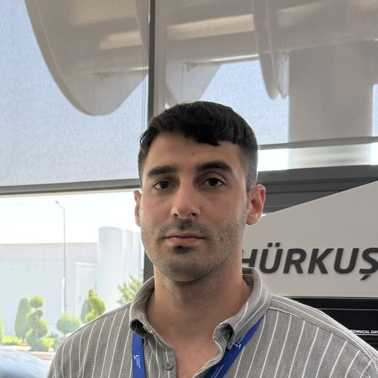
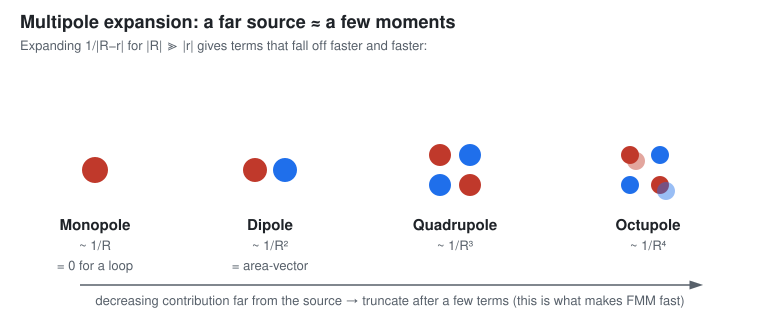
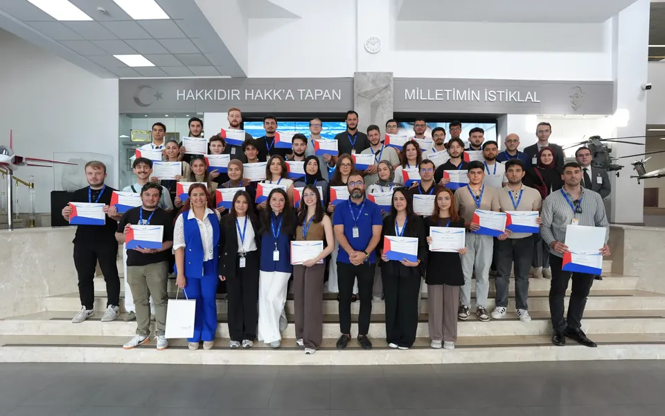
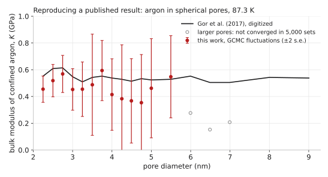
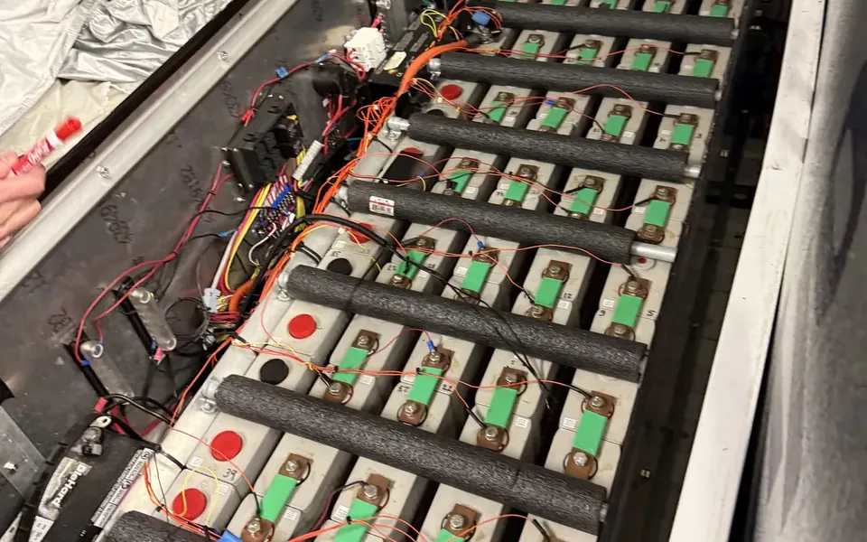
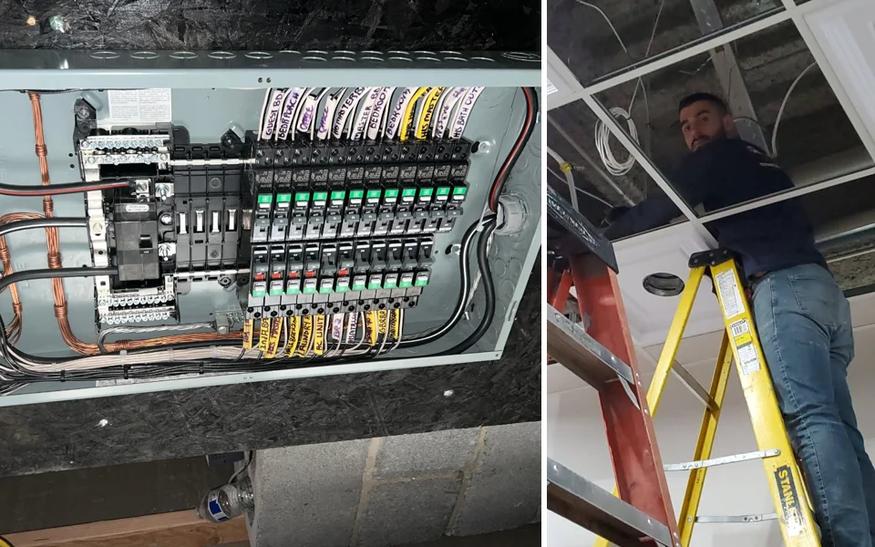

Omer Kilic

North Jersey, NJ, USA
omer.kilic [at] rutgers.edu
Hi, I am Omer 👋
I am an undergraduate in Aerospace Engineering at Rutgers University, and an Aresty Research Scholar in Prof. Mitsunori Denda’s Bio-Inspired Micro Aerial Vehicles group, co-advised by Prof. Onur Bilgen. My work is on making unsteady aerodynamic simulation fast and differentiable: fast multipole methods for vortex-ring wakes, discrete-vortex solvers, and gradient-based design.
I spent Aug–Sep 2026 at Turkish Aerospace (TUSAŞ) on KAAN store-separation aerodynamics, six-degree-of-freedom trajectory analysis and rotor-blade manufacturing, and the summer of 2025 in Prof. Gennady Gor’s Laboratory for Materials Interfaces at NJIT, on Monte Carlo simulation of helium in nanoscale cavities in zirconium.
Before Rutgers I studied economics and business at Bilkent University in Ankara on a full scholarship, where I was active in the Young Entrepreneurs Society and helped organize the Ankara Startup Summit; I moved to the United States in 2020.
Alongside my studies I founded and run Hi Tech Electrical Contractors, an electrical contracting company in northern New Jersey. I find the work, price it, diagnose the faults and do the installations myself, from fixtures to service-panel upgrades, and the company holds a 5.0 rating across 22 verified customer reviews on The Home Depot’s Pro Referral. It is where I learned to own a problem from the first call to the final inspection.
news
| Oct 2026 | Published a dedicated research page for the Denda Lab work, project pages for NJIT, the electric truck and Turkish Aerospace, and a workshop of handwritten derivations, scripts, data and reading lists. |
|---|---|
| Sep 2026 | Launched the research hub for the Bio-Inspired Micro Aerial Vehicles group, flapping-wings.vercel.app. |
| Aug 2026 | Started as a candidate engineer at Turkish Aerospace (TUSAŞ)
in the SKY Global Türk internship programme (through YTB’s Türkiye
Internship Programme), in UAV Manufacturing and KAAN Aerodynamics.
|
| Jun 2026 | Presented the closed-form resolution of the quadrupole coupling term and the five-operator FMM pipeline to the group. |
| Spring 2026 | Joined Prof. Denda’s flapping-wing group as an Aresty Research Scholar, and was admitted by special faculty permission to the graduate course Flying Insects and Flapping Robots. |
| 2025 | Graduated from Bergen Community College with a 3.90 GPA and transferred into Aerospace Engineering at Rutgers. |
| Jun 2025 | Research intern in Prof. Gennady Gor’s Laboratory for Materials Interfaces at NJIT, running grand canonical Monte Carlo simulations of helium confined in nanoscale cavities. |
selected work
-
Julia FMM

A ring-native fast multipole method for flapping-wing wakesDenda Lab, Rutgers MAE, with Prof. Mitsunori Denda; co-advised by Prof. Onur Bilgen2026 – presentClosed-form multipole moments for vortex rings and polygonal panels, translation operators, and a-priori far-field error bounds, verified against direct summation across an automated suite of 40 test groups and 274 checks. Along the way the group’s MATLAB 3-D wake code got an exact, fully vectorized velocity kernel that took a 15-step run from 1,783 s to 50 s; the multipole method overtakes that exact kernel at wakes roughly ten times larger. The solver is differentiable, so flapping strokes can be designed by gradient ascent.
-
CFD 6-DOF

KAAN store separation and flight dynamicsTurkish Aerospace (TUSAŞ), KAAN AerodynamicsAug – Sep 2026Ran store-separation studies end to end: geometry preparation, meshing, solver execution, six-degree-of-freedom trajectory analysis and post-processing, alongside scaled-store wind-tunnel tests. Separately derived the 6-DOF Newton–Euler equations of motion, stability derivatives and spin behaviour from first principles, and documented how the aerodynamic database and surrogate models are built.
-
Composites RotorT129 main-rotor blade manufacturing and balancingTurkish Aerospace (TUSAŞ), UAV ManufacturingAug – Sep 2026
Technical report evaluating production approaches for AKSUNGUR propeller blades: master tooling, tolerances, centre-of-gravity control, and gram-scale tip trim-mass corrections with their moment-arm effect on rotor vibration. Also mapped the design-to-production data chain across the AKSUNGUR, ANKA-3, Super Şimşek and AYAZ programmes.
-
Monte Carlo Python

Helium in nanoscale cavities: grand canonical Monte CarloLaboratory for Materials Interfaces (Prof. Gennady Gor), NJITSummer 2025Reproduced a published result first: the elastic modulus of argon in spherical nanopores from particle-number fluctuations, matching the published curve within two standard errors over 2.25–5.5 nm. Then built a helium–zirconium model and ran 28 chemical-potential points at 573 K and 973 K in a 3.0 nm cavity, with a Python driver that runs the sweep in parallel and block-averaged statistics throughout.
-
CAN bus Embedded

Instrumenting an electric pickup truckBergen Community College STEM Research Center, nine-student team2024 – 2025A 1998 Chevrolet K1500 converted to electric drive, with a 117 V, 41 kWh LiFePO4 pack. With a teammate I wrote the CAN bus decoder for the battery-management system’s frames, then the first in-cab logger around it: GPS, SD-card logging and a live display of pack current, voltage, weakest cell and the discharge limit that decides when the truck shuts down.
-
Founder Hands-on

Hi Tech Electrical ContractorsFounder and owner, northern New JerseyOngoing, alongside my studiesA residential and light-commercial electrical contracting company that I started and run: I win the jobs, price them, plan the circuits, pull the permits, diagnose the faults and do the installations myself, from fixtures and EV chargers to new wiring and service-panel upgrades, including an electrical contracting project at a US Army support site. It holds a 5.0 rating across 22 verified customer reviews on The Home Depot’s Pro Referral. Running it taught me to own a problem from the first call to the final inspection.